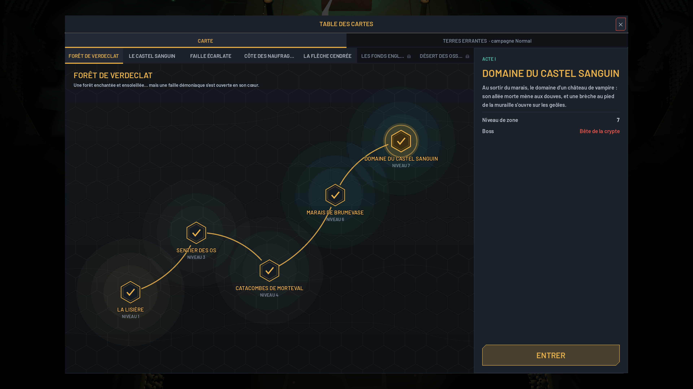

Version 0.4.0 · October 31, 2026
Three acts, fifteen dungeons
A three-act campaign with fifteen dungeons, readable enemy attacks and a palette for each class.
Three acts, fifteen dungeons
The Verdeclat forest, the Desert of Bones and the Scarlet Rift, each with its own theme, palette and music. The refuge becomes an island resting on the sea.
See the blows coming
Arcs, circles and lines on the ground announce enemy attacks, in the colour of their element. The endless arena gains elites, and every nightmare map rolls its modifiers.
A silhouette for every class
Cloth, hair and the glow of the eyes change with the class: you can spot yourself at a glance in a crowded arena.
Patch notes
World
- A campaign in three acts and fifteen dungeons: the Verdeclat forest (a1–a5), the Desert of Bones (a6–a10), the Scarlet Rift (a11–a15), each with its own theme, palette and music.
- The hub becomes an island resting on the sea: painted sand, a sloping beach, foam on the shore and an animated swell; scenery reduced to the dummy and the war table.
- Cleaned-up scenery: only the Kenney and Quaternius kits are used, white materials fixed, basalt walls in the rift, a cart and beach props.
Combat and readability
- Attack telegraphs per enemy type: arcs, circles and lines on the ground, coloured by element — you see the blows coming.
- An endless arena with waves, elites and best wave tracking.
- Nightmare modifiers rolled when each map opens (16 affixes, three per tier).
Items and interface
- Loot filter by rarity, automatic comparison with the equipped item, DPS and toughness auto-equip button.
- Abbreviated damage numbers (k), a scrolling character list, a second skill on right-click.
Class variants
- Every class now has its own palette: cloth, hair and the glow of the eyes change, the silhouette reads at a glance in a crowded arena.
Audio
- Five buses (master, effects, music, interface, ambience) with sliders that really apply, even when the game is paused.
- Music and ambience for every act, zone and boss; the act I theme re-recorded.
Rendering
- No more visible tiles on the ground: textures re-centred on their detail, decorrelated ground noise and shadows in a single cascade.
- The hub's water fully repainted (swell texture, foam in two strokes, translucent fringe) and an invisible wall before the slope.